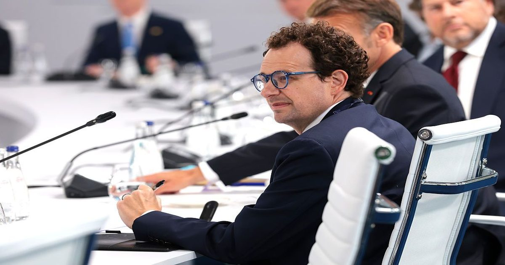

Anthropic ожидает получить высокий «мусорный» рейтинг от кредитных агентств после IPO, говорится в отчете FT
Прогноз Блэкстоуна - это всего лишь прогноз, но, естественно, высокий рейтинг мусора затруднит и сделает дороже для Anthropic сбор денег, чтобы продолжать финансировать свои огромные расходы, которые легли в основу его бизнеса.